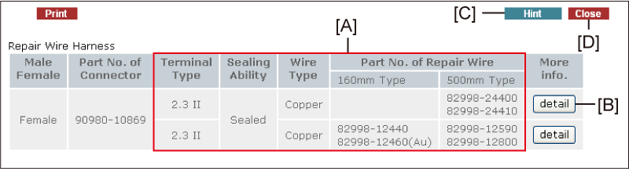
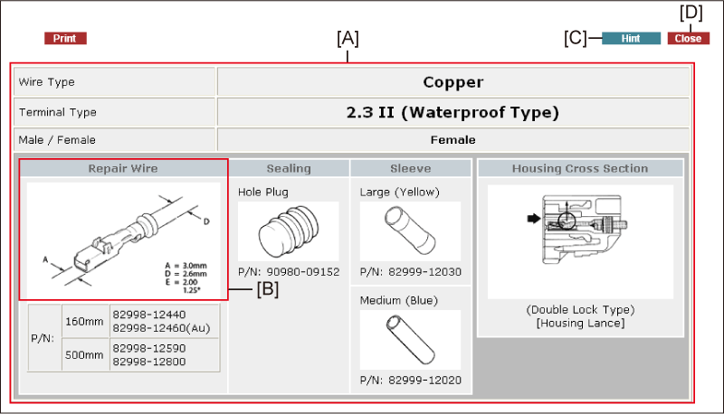

The Repair Wire Harness data is displayed.
Click this button to access the detailed repair wire harness data.
Click this button to access the Repair Wire Harness Introduction and Terminal and Connector Repair.
Click this button to close the window.
Note that you cannot click any buttons or enter any numbers outside this window while it is being displayed.

Supplementary information regarding repair wire harnesses is displayed.
HINT: This window is displayed only when the detailed repair wire harness data is available.
The following symbols are used on the screen.
A Terminal width B Terminal diameter C Terminal guide width D Wire outside diameter E Nominal size of wire * Gold plated (Gilded)
Click this button to access the Repair Wire Harness Introduction and Terminal and Connector Repair.
Click this button to close the window.
Note that you cannot click any buttons or enter any numbers outside this window while it is being displayed.